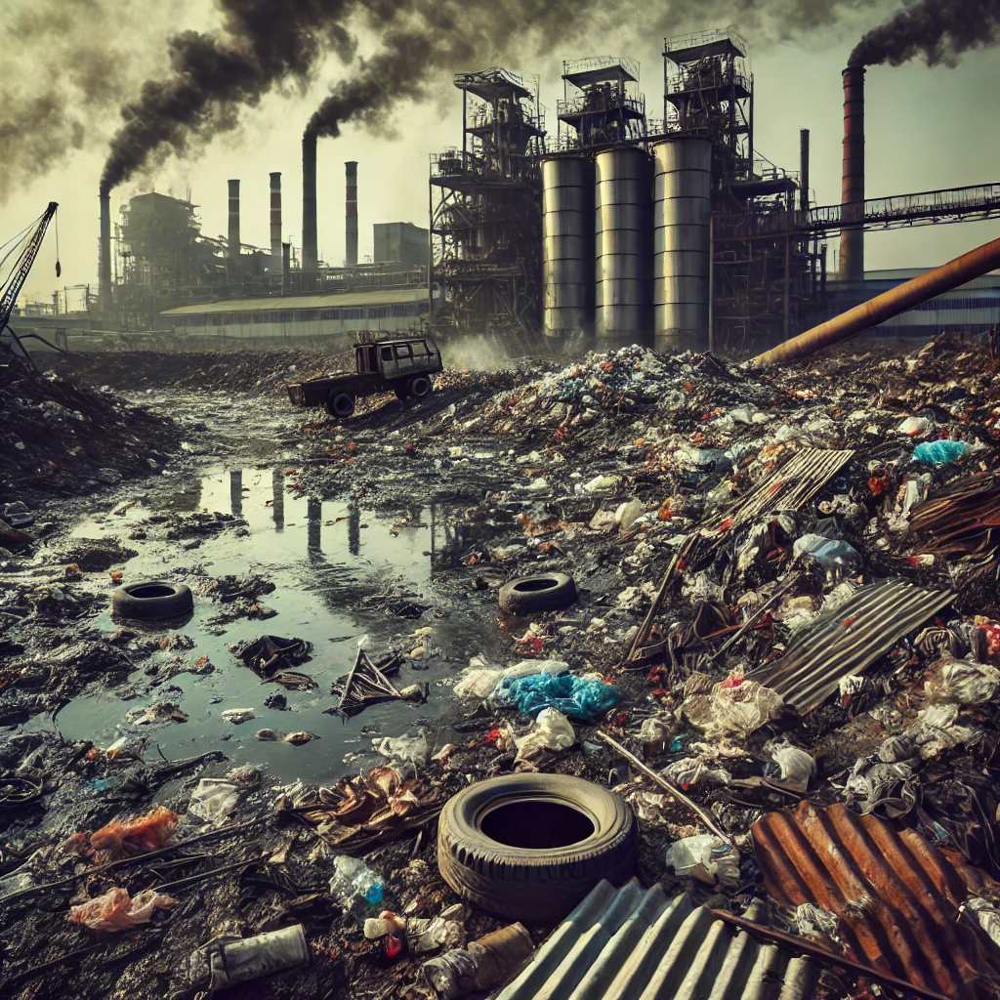

Causes of Soil Pollution
- Industrial Waste: Factories release chemicals and pollutants into nearby soils.
- Agricultural Practices: Excessive use of pesticides and fertilizers contaminates the soil.
- Waste Disposal: Improper disposal of hazardous materials leads to contamination.
- Soil-erosion: Soil erosion is the process by which soil is worn away by wind, water, or human activity, leading to the loss of fertile topsoil.
- Deforestation: Deforestation is the large-scale removal of forests, often for agriculture or urban development, resulting in habitat loss and environmental degradation.

Industrial Waste
Soil pollution from industrial waste is a significant environmental issue, affecting soil health, ecosystems, and human well-being. Industrial activities, particularly manufacturing, mining, and chemical production, generate large quantities of waste, including toxic substances like heavy metals, hydrocarbons, and chemicals. When improperly managed or disposed of, these pollutants can leach into the soil, contaminating it and making it hazardous for plants, animals, and humans.
Heavy metals like lead, mercury, and cadmium are often present in industrial waste, posing long-lasting threats as they persist in the soil and are difficult to remove. These pollutants can disrupt soil microorganisms and reduce soil fertility, impacting plant growth and agriculture. Plants growing in contaminated soils may absorb toxins, leading to bioaccumulation through the food chain, which poses health risks for both animals and humans who consume these plants.
Industrial wastes are produced in a large amount every year globally. The deposition of such huge amount of wastes in common land causes a lot of environmental hazards. Employing these industrial wastes in water remediation serves as an environment-friendly, cost-effective, and efficient approach for their utilization. Adsorption is one of the most valuable scientific tools for industries as well as academia. It has a wide range of applications and is especially beneficial for environmental remediation due to its explicit utility in the purification of water from a wide range of impurities such as toxic heavy metals, dyes, organic pollutants, inorganic ions, pharmaceutical wastes, and other contaminants. Some of the industrial wastes such as fly ash, lignin, red mud, blast furnace slag, sludge, and dust can be used as efficient adsorbents for the removal of toxic impurities from water. Efficient and novel adsorbents are the ones that purify wastewater as well as contribute to the minimization of the cost of the remediation process and the recyclization of industrial wastes, simultaneously reducing environmental hazards. This chapter consists of discussion on a few industrial wastes and their modification to form low-cost, novel adsorbents for wastewater treatment. Production and utilization of the industrial wastes, removal of specific impurities along with the challenges of the removal process, and the factors and trends observed in the adsorption process are highlighted.
Agricultural Practices
Agricultural practices, especially modern intensive farming techniques, have a profound impact on soil pollution. The primary contributors to soil contamination in agriculture include the excessive use of chemical fertilizers, pesticides, herbicides, and improper waste management from livestock farms. These chemicals, while intended to enhance crop yield and protect plants, often have unintended consequences on soil health and the surrounding environment.
Chemical fertilizers are rich in nitrogen, phosphorus, and potassium, nutrients essential for plant growth. However, when applied excessively, these chemicals alter the natural nutrient balance in the soil. Excess nitrogen, for instance, can disrupt soil microorganisms and lead to nutrient depletion over time. Furthermore, the runoff from fields treated with synthetic fertilizers often flows into nearby water bodies, causing a chain reaction of pollution that leads to eutrophication, harming aquatic ecosystems.
Pesticides and herbicides, designed to kill harmful pests and invasive weeds, are another major source of soil pollution. Many of these chemicals contain toxic compounds, such as organophosphates, which persist in the soil for long periods. These chemicals not only harm pests but can also disrupt beneficial organisms in the soil, such as earthworms and bacteria that are essential for soil fertility. Over time, the accumulation of these toxic compounds can render soil infertile and unusable for sustainable farming practices.
In addition, improper disposal of livestock waste can lead to high concentrations of nitrates and phosphates in the soil. Manure, when not managed correctly, releases methane and ammonia, which can leach into the ground, contaminating both soil and groundwater.
To reduce soil pollution from agricultural practices, adopting sustainable farming methods is crucial. Techniques like crop rotation, organic farming, controlled pesticide use, and integrated pest management can help maintain soil health. Using natural fertilizers like compost and practicing no-till farming also reduce soil disturbance, helping to preserve the soil’s structure and nutrient balance. Sustainable agriculture is key to preventing soil degradation, ensuring both environmental protection and agricultural productivity.
Waste Disposal
Improper wastewater disposal is a significant contributor to soil pollution, especially in industrial and urban areas where untreated or inadequately treated water is often released onto land or into nearby water bodies. Wastewater can contain a range of harmful substances, including heavy metals, chemicals, and pathogens, which seep into the soil and contaminate it. Over time, these pollutants can degrade soil quality, reduce its fertility, and disrupt the natural balance of microorganisms essential for healthy soil.
Heavy metals, such as lead, mercury, and cadmium, are common in industrial wastewater and can accumulate in the soil over time, making it toxic and difficult to remediate. These metals do not break down easily and can persist in the soil for years, posing health risks to plants, animals, and humans who may come into contact with them. Furthermore, wastewater from households or industries often contains organic pollutants and harmful bacteria, which can lead to the proliferation of pathogens in the soil, threatening local ecosystems.
To prevent soil contamination from wastewater, proper treatment and disposal practices are essential. Effective filtration and chemical treatment systems can help remove toxic elements before wastewater is released, helping to protect soil health and reduce environmental pollution.
Deforestation
Deforestation is the permanent removal of trees from a forest. Deforestation can include clearing the land for farming or livestock, or using the timber for fuel, construction or manufacturing.
Forests cover more than 30% of Earth's land surface, according to the World Wildlife Fund (WWF). These forested areas produce oxygen and absorb carbon dioxide (CO2), and are home to an estimated 80% of Earth's terrestrial species. Forests also are a source of food, medicine and fuel for more than a billion people. Worldwide, forests provide 13.4 million people with jobs in the forest sector, and another 41 million people have jobs related to forests.
Forests are an important natural resource, but humans have destroyed substantial quantities of forested land. In North America, about half the forests in the eastern part of the continent were cut down for timber and farming between the 1600s and late 1800s, according to National Geographic.
Today, most deforestation is happening in the tropics. Areas that were inaccessible in the past are now within reach as people build new roads through the dense forests. The world has lost about 10% of its tropical tree cover since 2000, and nearly 47,000 square miles (121,000 square kilometers) were destroyed in 2019 alone, The New York Times reported in 2020.
The World Bank estimates that about 3.9 million square miles (10 million square km) of forest have been lost since the beginning of the 20th century. In the past 25 years, forests shrank by 502,000 square miles (1.3 million square km) — an area bigger than the size of South Africa.
Often, deforestation occurs when people cut or clear forested area to make way for agriculture or grazing. The Union of Concerned Scientists (UCS) reports that just four commodities are mostly responsible for the vast majority of tropical deforestation: beef, soy, palm oil and wood products. UCS estimates that an area the size of Switzerland (14,800 square miles, or 38,300 square km) is lost to deforestation every year.
People often light fires to clear land for agricultural use. First, workers harvest valuable timber, then burn the remaining vegetation to make way for crops like soy, or for cattle grazing. In 2019, the number of human-lit fires in Brazil skyrocketed. As of August 2019, more than 80,000 fires burned in the Amazon, an increase of almost 80% from 2018, National Geographic reported.
Many forests are cleared to make way for palm oil plantations. Palm oil is the most commonly produced vegetable oil and is found in half of all supermarket products. Growing the trees that produce the oil requires the leveling of native forest and the destruction of local peatlands — which doubles the harmful effect on the ecosystem., The global palm oil market was valued at $36.71 billion in 2019 and has been "witnessing unprecedented growth," according to a 2020 report published by Business Wire.

Soil Erosion
Soil erosion is the process by which the top layer of soil, rich in nutrients and organic matter, is removed by natural forces like wind, water, and human activity. This phenomenon degrades the land’s fertility, impacting agricultural productivity and leading to the loss of valuable soil. Soil erosion can occur gradually, with small amounts of soil lost over time, or it can happen rapidly through events like heavy rainfall or windstorms.
In agriculture, soil erosion is often accelerated by practices such as overgrazing, deforestation, and improper land management. When vegetation is removed, the soil becomes exposed and vulnerable to erosion. Rainwater or irrigation can then wash away the soil, especially on slopes, leaving behind barren land. Wind erosion also becomes more severe on exposed soil, especially in arid regions, where loose soil particles are easily carried away.
The consequences of soil erosion extend beyond just soil loss. It contributes to sedimentation in rivers and streams, which can harm aquatic ecosystems and reduce water quality. To combat soil erosion, sustainable practices like planting cover crops, using contour farming, terracing, and implementing windbreaks are effective. These methods help retain soil, maintain land productivity, and support healthy ecosystems for future generations.
Types ofSoil Erosion
1)Water Erosion
As the name suggests, this soil erosion type is caused by water and implies topsoil removal after rainfall, snowmelt, floods, or poorly managed irrigation. Thus, it can occur both due to weather extremities or farming activities. In bare terrains and under intense rainfall or melting, destruction by water happens faster.
2)Wind Erosion
Another erosion-inducing factor is dust storms destroying the topsoil. Dust storms have been a frequent phenomenon in the last decades, especially in arid places. Erodibility increases if the earth is even, fine, and dry. Conversely, ridges reduce wind energy, and rough heavy particles are more difficult to be removed.
3)Anthropogenic Soil Erosion
This type occurs due to anthropogenic factors, and human activities can induce soil erosion directly and indirectly. For example, a direct impact comes from mining and quarrying. Indirect consequences follow unsustainable management, disturbing the topsoil and increasing erodibility of fields and forest stands.
Previous
Next